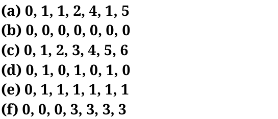
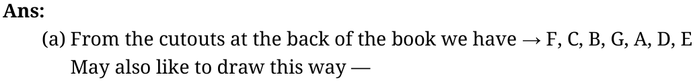

- 1.Arrange the stick figure cutouts given at the end of the book or draw a
height arrangement such that the sequence reads:


Try for other subparts
- 2.For each of the statements given below, think and identify if it is Always
True, Only Sometimes True, or Never True. Share your reasoning.
- (a)If a person says ‘0’, then they are the tallest in the group.
- (b)If a person is the tallest, then their number is ‘0’.
- (c)The first person’s number is ‘0’.
- (d)If a person is not first or last in line (i.e., if they are standing
somewhere in between), then they cannot say ‘0’.
- (e)The person who calls out the largest number is the shortest.
- (f)What is the largest number possible in a group of 8 people?
Ans:
- (a)Only sometimes true
- (b)Always true
- (c)Always true
- (d)Only sometimes true
- (e)Only sometimes true
- (f)The largest possible number in a group of 8 people is 7
Page No- 131 Figure it out
- 1.Using your understanding of the pictorial representation of odd and even
numbers, find out the parity of the following sums:
- (a)Sum of 2 even numbers and 2 odd numbers (e.g., even + even + odd +
odd)
- (b)Sum of 2 odd numbers and 3 even numbers